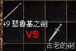

2003年3月4日 最強對最強 - +9瑟魯基之劍與+0古代之劍命中率測試 鳴謝香港太陽神的KurtCobain提供+0古老的劍（以下稱為古代之劍），及死亡騎士提供+9瑟魯基之劍作為測試之用，同時亦非常感謝AE86levin及Blessed肯花時間用魔法為無血的受測者回血。 首先是兩把武器的重要資料： 古代之劍：35/20，攻擊命中+5，單手，對小型怪平均傷害值18，小型怪(包括玩家角色)的傷害相當於+9.5瑟魯基之劍，但不能加武。
+9瑟魯基之劍：16/10，攻擊命中+2，單手，對小型怪平均傷害值17.5，而美國官方人員曾經說過+6的武器會有攻擊命中+3效果，因此武器可能每加兩點便多一點攻擊命中，+9瑟劍可能會再額外附加攻擊命中+4，總共攻擊命中+6。 測試設定： 攻擊者：46級騎士 20力 12敏 14體 沒有任何魔法效果 攻擊100次計算傷害及MISS次數
被打者：47級騎士 18力 12敏 18體 100%負重 防禦分別是-50，-60及-70 此項測試是比較古代的劍及+9瑟魯基之劍的命中率，因此我們使用了較弱的角色及不使用任何助魔法，以便更能清楚看到兩把神器的命中率的分別。假如使用較強的角色並使用輔助魔法的話，平均傷害會多約6-12點，而命中率亦會較準。攻擊者的力量對傷害修正為4，等級對傷害修正為4，因此使用+9瑟魯基之劍的傷害會落在18-33(平均25.5)之間，而使用+0古代之劍則落在9-43(平均26.0)之間。結果如下： | +9瑟魯基之劍攻擊-50防 | | 傷害 | 18 | 19 | 20 | 21 | 22 | 23 | 24 | 25 | 26 | 27 | 28 | 29 | 30 | 31 | 32 | 33 | | 次數 | 4 | 5 | 6 | 6 | 5 | 8 | 7 | 2 | 2 | 5 | 3 | 2 | 8 | 1 | 5 | 5 | MISS率：26%
總傷害：1850
平均傷害：25.34（不包括MISS）
平均傷害：18.50（包括MISS） |
| +0古代之劍攻擊-50防 | | 傷害 | 09 | 10 | 11 | 12 | 13 | 14 | 15 | 16 | 17 | 18 | 19 | 20 | 21 | 22 | 23 | 24 | 25 | 26 | 27 | 28 | 29 | 30 | 31 | 32 | 33 | 34 | 35 | 36 | 37 | 38 | 39 | 40 | 41 | 42 | 43 | | 次數 | 2 | 4 | 1 | 1 | 3 | 1 | 1 | 2 | 3 | 2 | 2 | 2 | 0 | 1 | 3 | 0 | 2 | 1 | 1 | 3 | 4 | 2 | 2 | 3 | 1 | 1 | 2 | 3 | 2 | 5 | 2 | 4 | 3 | 3 | 1 | MISS率：27%
總傷害：1997
平均傷害：27.36（不包括MISS）
平均傷害：19.97（包括MISS） |
| +9瑟魯基之劍攻擊-60防 | | 傷害 | 18 | 19 | 20 | 21 | 22 | 23 | 24 | 25 | 26 | 27 | 28 | 29 | 30 | 31 | 32 | 33 | | 次數 | 4 | 6 | 3 | 4 | 3 | 5 | 5 | 2 | 1 | 2 | 4 | 6 | 6 | 4 | 5 | 7 | MISS率：33%
總傷害：1742
平均傷害：26.00（不包括MISS）
平均傷害：17.42（包括MISS） |
| +0古代之劍攻擊-60防 | | 傷害 | 09 | 10 | 11 | 12 | 13 | 14 | 15 | 16 | 17 | 18 | 19 | 20 | 21 | 22 | 23 | 24 | 25 | 26 | 27 | 28 | 29 | 30 | 31 | 32 | 33 | 34 | 35 | 36 | 37 | 38 | 39 | 40 | 41 | 42 | 43 | | 次數 | 3 | 2 | 1 | 4 | 4 | 2 | 0 | 2 | 2 | 1 | 1 | 2 | 2 | 1 | 3 | 2 | 1 | 2 | 1 | 3 | 2 | 3 | 0 | 3 | 3 | 2 | 1 | 3 | 2 | 1 | 4 | 2 | 1 | 1 | 0 | MISS率：33%
總傷害：1683
平均傷害：25.12（不包括MISS）
平均傷害：16.83（包括MISS） |
| +9瑟魯基之劍攻擊-70防 | | 傷害 | 18 | 19 | 20 | 21 | 22 | 23 | 24 | 25 | 26 | 27 | 28 | 29 | 30 | 31 | 32 | 33 | | 次數 | 8 | 4 | 3 | 3 | 3 | 2 | 7 | 2 | 2 | 4 | 5 | 7 | 2 | 7 | 1 | 3 | MISS率：37%
總傷害：1584
平均傷害：25.14（不包括MISS）
平均傷害：15.84（包括MISS） |
| +0古代之劍攻擊-70防 | | 傷害 | 09 | 10 | 11 | 12 | 13 | 14 | 15 | 16 | 17 | 18 | 19 | 20 | 21 | 22 | 23 | 24 | 25 | 26 | 27 | 28 | 29 | 30 | 31 | 32 | 33 | 34 | 35 | 36 | 37 | 38 | 39 | 40 | 41 | 42 | 43 | | 次數 | 1 | 2 | 3 | 0 | 0 | 1 | 2 | 3 | 2 | 0 | 3 | 0 | 6 | 4 | 2 | 1 | 1 | 1 | 2 | 2 | 3 | 0 | 1 | 3 | 2 | 1 | 0 | 1 | 3 | 1 | 1 | 3 | 3 | 1 | 1 | MISS率：40%
總傷害：1556
平均傷害：25.93（不包括MISS）
平均傷害：15.56（包括MISS） |
從以上測試中+9瑟魯基之劍的命中率比古代之劍高，尤其是在高防的情況下，可見+9瑟劍可能總共有攻擊命中+6，而古代之劍則只有攻擊命中+5，在命中率方面古代之劍稍遜，不過古代之劍對小怪的平均傷害值則多0.5。因此假於要與較高防禦的玩家戰鬥，使用+9瑟劍會較有利。而對於打小型怪來說，由於命中率幾乎都接近100%，因此使用古代之劍會較好。而古代之劍對於大怪雖然有20點攻擊力，但由於不能加武的關係，平均傷害大約等於+4武士刀或+5瑟劍，因此用來打大型怪會相當吃力。 當然，如果你有+10瑟劍的話（總共攻擊命中+7，對小怪平均傷害多古劍0.5），便不用考慮古代之劍了，這解釋了為甚麼韓國那兩名Lv70+都只用瑟劍。
賽妮絲長靴能力值更改 來源：美國天堂官方網站 繼賽妮絲手套由-3防改為-1防後，賽妮絲長靴的防禦亦由韓國官方最初公佈的-5防改為-2防，而反王套裝則沒有更改。另外反王套裝及賽妮絲套裝中的頭盔在更新了亞丁城的美國伺服器是仍然未開放，這情況可能與死亡騎士手套及惡魔手套相若，可能要待下次更新後的新怪物才會掉落。
韓國測試伺服器一些改變 來源：Lineage
Playforum (2)
英文翻譯：Lineage Compendium 1. 巨人會使用遠距離的拋石頭攻擊，大約會損50血。
2. 在傲慢塔中除了夢魔外，所有怪物都能看穿變身。
3. 首領級怪物的實力加強了，當中以惡魔及不死鳥的實力最為明顯。 |